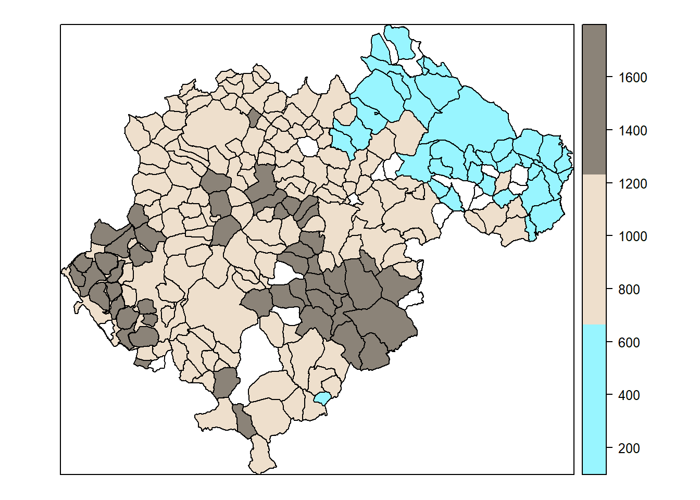
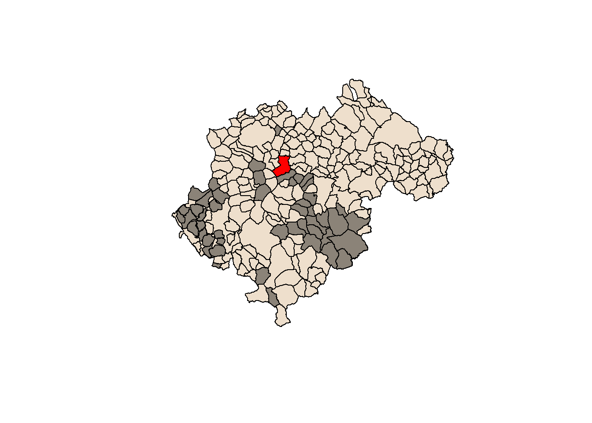
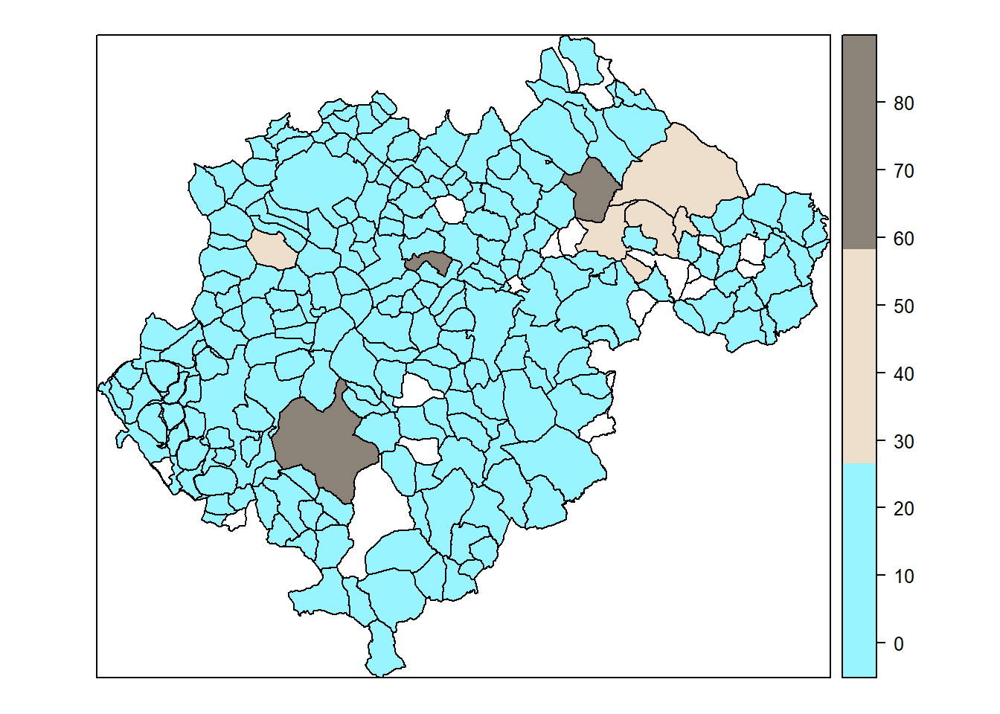

En el post anterior hice web scrapping bajándome una tabla con los municipios de Teruel y su altitud; pero no hice ningún mapa. Hoy voy a hacerlos.
Primero hace falta bajarse esta tabla de la Wikipedia con las altitudes y guardarla en un dataframe. Esto lo expliqué en el post anterior así que ya tenemos la tabla con las altitudes almacenada en un dataframe que se llama Teruel.
Os recordaré que Valdelinares es el pueblo “más alto” de Teruel, seguido de Griegos, pero ¿y mi pueblo? Mi pueblo se llama Pancrudo y es muuuuy alto, pero veámoslo en un gráfico.
Mapa con las altitudes
Primero he cargar los datos de lindes municipales. No quiero liarme mucho así que cargaré el fichero que usaba hace uno/dos añitos. No lo voy a actualizar ni chequear. PERO, lo que sí que he hecho es crear un package en Github para poder cargar los datos que uso en el blog desde R. Lo puedes ver aquí. Creo que en el siguiente post contaré cómo y porque lo he hecho. No me quiero liar ahora. Me hacía falta!!
library(mypkgDataforblog)
library(rgdal)
municipios <- municipios_CNIG #- los cargo de mi pkg
rm(aa, body_table, content, head)Selecciono los municipios de Teruel. Se me hace raro seleccionar con baseR pero es la única forma que conozco de seleccionar en SpatialPoly.
sel <- municipios$NombreProv == "Teruel"
municipios <- municipios[sel,]A fusionar los ficheros de lindes con los de altitud sacados de Internete; es decir, incorporo la información de altitudes y demás al fichero con los polígonos espaciales.
aa <- municipios@data
municipios@data <- left_join( municipios@data , Teruel, by = c("NombreMuni"= "Nombre"))Pues ya está. Sólo queda hacer el gráfico con sp::spplot:
sp::spplot(municipios, zcol = "Altitud", cuts = 2, col.regions = c("cadetblue1", "antiquewhite2", "antiquewhite4"))
Gráfico de los municipios por altura. En color azulito las zonas por debajo de 600 metros, aproximadamente el Bajo Aragón. En marrón oscuro las zonas más altas entre ellas mi pueblo.
Tengo que aprender un poco de palettes!! Justo cabo de ver este pkg
Ahora un gráfico con los pueblos más altos que Pancrudo. Pancrudo es mi pueblo y lo voy a poner en rojo. En marrón oscuro los que nos ganan en altura. Tan tan arriba no creo que sea sano vivir!! 😱 😄
Mapa con los pueblos más altos que Pancrudo
#jpeg("./grafico_altura_Teruel.jpg")
#dev.off()
plot(municipios, col = "antiquewhite2")
my_sel <- subset(municipios, municipios$NombreMuni == "Pancrudo")
sel <- municipios$Altitud > my_sel$Altitud & !is.na(municipios$Altitud)
plot(municipios[ sel, ], col = "antiquewhite4", add = TRUE)
sel <- municipios$Altitud == my_sel$Altitud & !is.na(municipios$Altitud)
plot(municipios[ sel, ], col = "red", add = TRUE) # add selected zones to map
Como veis, Pancrudo está bastante alto, 1235 metros según la Wiki, un poco menos según mi primo. Rillo nos gana, pero solo por 34 metros. ¿Seguro que han medido bien?
Ya que estamos me da curiosidad y quiero hacer el mapa por densidad de población:
Mapa por densidad de población
sp::spplot(municipios, zcol = "Densidad", cuts = 2, col.regions = c("cadetblue1", "antiquewhite2", "antiquewhite4"))
Las 3 poblaciones en marrón (densidad > q casi 60) son en este orden Utrillas, Teruel y Andorra. El agujero (polígono en blanco) que hay al lado de Teruel creo que es La Puebla de valverde. Aparece en blanco porque en los datos sacados del INE su nombre es “Puebla de Valverde, La” y en la tabla de internet es “La Puebla de Valverde”. No lo arreglo porque este blog es para aprender y relajarme y ya vale por hoy.
Bueno, como veis mis conocimientos sobre gráficos espaciales (y gráficos en general) en R es limitado, pero estoy en ello. De hecho hace como año y medio hacia gráficos bastante más potentes. Usé ggmpap leaflet y ggplot2 y alguno más, pero todo se olvida, y ahora prefiero empezar con madatos espaciales por lo nuevo; that is, el pkg sf. 😎.
P.S: (Bastante técnico, al menos para mi)
Resulta que yo quería haber puesto los 2 post sobre altitudes en uno sólo, pero resulta que cuando los juntaba me daba problemas la datatable. Mirando por internet vi la solución aquí, pero funciona sólo a medias. La verdad es que lo mejor de R es la comunidad de usuarios!!
La solución consiste en grabar la datatable como un objeto e insertarla en un iframe. Abajo está el código.
library(DT)
aa <- decimales_df_pjp(Teruel, 2) %>% select(1,7,3,5) #- rtdos con 2 decimales
datatable_Teruel <- datatable(aa, extensions = 'Scroller', options = list( pageLength = 10, deferRender = TRUE,scrollY = 400,scroller = TRUE), rownames = F, filter = "top")library(htmlwidgets)
library(htmltools)
htmlwidgets::saveWidget(datatable_Teruel, file = "C://Users/perezp/desktop/datatable_Teruel.html", selfcontained = TRUE)e insertar la datatable así
Tabla: Municipios de Teruel ordenados por altitud
<iframe seamless src="/datatable_Teruel.html" width="100%" height="500"></iframe>